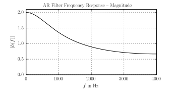
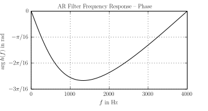
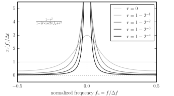
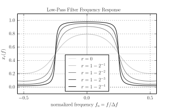

Discrete-Time Signals in the Frequency Domain
By Sébastien Boisgérault, Mines ParisTech, under CC BY-NC-SA 4.0
November 28, 2017
Contents
Introduction
Discrete-time signals are obtained by the sampling of continous-time signals – real-valued functions of a real-valued time – at a constant rate (see e.g. Strang (2000)). The analysis of many of their properties are simpler to carry out “in the frequency domain”, once a Fourier transform has been applied to the original data (also called representation in the signal “in the time domain”).
In the classical setting, the Fourier transform generates functions of the frequency. However, the signals with arguably the simplest frequency content, sinusoidal signals, then cannot be represented in the frequency domain. Hence, this theory should be considered a partial failure, or at least incomplete.
Extensions of the classical approach uses generalized functions of the frequency to represent discrete-time signals in the frequency domain. We introduce in this document a type of generalized functions called hyperfunctions (Sato 1959; Kaneko 1988), whose foundation is complex analysis, that fits perfectly the needs of discrete-time signal processing.
Terminology & Notation
Signals and Domains
We use in this document a convenient convention that is more popular among physicists than it is among mathematicians. In a given application domain – for us, that is digital signal processing – when an object has several equivalent representations as functions, we use the same name for the object, and distinguish the representations by (a superset of the) domain of definition of the function. To every such domain we also associate fixed variable names.
In this document, we are dealing with discrete-time signals with a sample period \(\Delta t\) (or sample rate \(\Delta f = 1 / \Delta t\)). A signal \(x\) is is represented in the time domain as a function \(x(t)\) where \(t \in \mathbb{Z}\Delta t,\) in the frequency (or Fourier) domain as the function \(x(f)\) where \(f \in \mathbb{R}/{\Delta f},\) and in the complex (or Laplace) domain as a function \(x(z)\) where \(z \in \mathbb{C}.\) We often implicitly favor some representation and refer for example to \(x(t)\) as “the signal” instead of “the representation of the signal \(x\) in the time domain”.
If \(t\) is a free variable, \(x(t)\) denotes a function of the time \(t,\) if it is bound to some value, the value of the function. If there is some ambiguity in the choice of the representation, we use an assignment syntax, for example \(x(t=0)\) instead of \(x(0),\) because it could be mistaken as \(x(f=0).\)
Sets and Functions
The set of functions from \(A\) to \(B\) is denoted \(A \to B.\)
The set \(\mathbb{C}\) is the complex plane; \(\mathbb{U}\) refers to the unit circle centered on the origin: \[ \mathbb{U} = \{z \in \mathbb{C} \, , \, |z|=1 \}. \] The symbol \(\partial \mathbb{U}\) denotes the boundary of \(\mathbb{U}.\) Its positively oriented boundary, the closed path \(t \in [0,1] \mapsto e^{i2\pi t}\), is denoted \([\circlearrowleft]\).
For any \(r>0,\) \(D_r\) is the open disk with radius \(r\) centered on the origin: \[ D_r = \{z \in \mathbb{C} \, , \, |z| < r\} \] and for any \(r \in \left[0,1\right[,\) \(A_r\) is the open annulus with internal radius \(r\) and external radius \(1/r\): \[ A_r= \{z \in \mathbb{C} \, , \, r < |z| < 1/r \}. \]
Iverson Bracket
We1 denote \(\{\,\cdot \,\}\) the function defined by: \[ \{b\} = \left| \begin{array}{ll} 1 & \mbox{if $b$ is true,} \\ 0 & \mbox{if $b$ is false.} \end{array} \right. \]
This elementary notation supercedes many other ones. For example, we can use \(\{x \in A\}\) instead of \(\chi_A(x)\) to denote the characteristic function of the set \(A,\) \(\{i=j\}\) instead of \(\delta_{ij}\) to denote the Kronecker delta, \(\{t \geq 0\}\) instead of \(H(t)\) to denote the Heaviside function.
Finite Signals
Definition – Signal (Time Domain), Sampling Period/Rate
A discrete-time signal \(x(t)\) is a real or complex-valued function defined on \(\mathbb{Z}\Delta t\) for some \(\Delta t > 0,\) the signal sampling period (or sampling time); the number \(\Delta f = 1/\Delta t\) is the signal sampling rate (or sampling frequency).In the sequel, all signals are discrete-time, hence we often drop this qualifier. Also, in this introductory section, although many definitions and results are valid in a more general setting, for the sake of simplicity, we always assume that signals are finite:
Definition – Finite Signal.
A discrete-time signal \(x(t)\) is of finite support – or simply finite – if \(x(t) = 0\) except for a finite set of times \(t.\)Fourier Transform
Definition – Signal in the Frequency Domain, Fourier Transform.
A signal \(x(t)\) is represented in the frequency domain as \(x(f),\) the (discrete-time) Fourier transform of \(x(t),\) defined for \(f\in \mathbb{R}\) by: \[ x(f) = \Delta t \sum_{t \in \mathbb{Z}\Delta t} x(t) e^{-i 2 \pi f t}. \]Remark – Frequency Domain.
Note that \(x(f)\) is \(\Delta f\)-periodic. Indeed, for any \(f\in \mathbb{R}\) and \(t = n \Delta t\) with \(n \in \mathbb{Z},\) \[ e^{-i 2 \pi (f+ \Delta f) t} = e^{-i 2 \pi f t} (e^{-i 2 \pi})^n = e^{-i 2 \pi f t} \] and therefore \[ x(f + \Delta f) = \Delta t \sum_{t \in \mathbb{Z}\Delta t} x(t) e^{-i 2 \pi (f+ \Delta f) t} = x(f). \] As \(x(f)\) does not really depend directly of the value of \(f \in \mathbb{R},\) but only on the value of \(f \in \mathbb{R}\) modulo some multiple of \(\Delta f\), we may alternatively define \(x(f)\) as a function defined on the frequency domain \(\mathbb{R} / \Delta f,\) and totally forget about the periodicity, because it is now captured by the domain definition. An alternate – arguably less contrived – way to deal with the periodicity is to consider only the values of \(x(f)\) on one period, for example in the interval \(\left[-\Delta f/2, \Delta f/2\right[.\)Remark – Fourier Transform of Continuous-Time Signals.
The discrete-time Fourier transform formula is similar to the continous-time Fourier transform formula \[ x(f) = \int_{-\infty}^{+\infty} x(t) e^{-i 2 \pi f t} \, dt. \] Actually, if \(x(t)\) if defined for every \(t \in \mathbb{R}\) and not only \(t \in \mathbb{Z}\Delta t\) – if our discrete-time signal samples the continuous-time signal \(x(t)\) – the discrete-time Fourier transform is the continuous one with the integral replaced by its Riemann sum. In many respects, the operator \(\Delta t \sum_{t \in \mathbb{Z} \Delta t}\) plays the same role for discrete-time signals than the integral with respect to the time \(t\) plays for continous-time signal.Theorem – Inversion Formula.
If \(x(t)\) is a finite signal, represented in the frequency domain as \(x(f),\) we have \[ x(t) = \int_{-\Delta f/2}^{+\Delta f/2} x(f) e^{i2\pi f t} \, df. \]Remark – Continuous-Time Signals (Inverse Fourier Transform).
The Fourier inversion formula for discrete-time signals is also very similar to its counterpart for continuous-time signals, that is: \[ x(t) = \int_{-\infty}^{+\infty} x(f) e^{i2\pi f t} \, df. \] Two differences are obvious: for continous-time time signals, the formula is meaningful for any \(t \in \mathbb{R}\) while in discrete-time, it is only meaningful for \(t \in \mathbb{Z} \Delta t;\) for continous-time signals, the integral with respect to the frequency \(f\) ranges over \(\mathbb{R}\) while for discrete-time signals, it ranges over \(\left[-\Delta f/2, \Delta f/2\right[.\) Unlike continous-time signals, the information contained in discrete-time signals is structurally contained in a bounded frequency band of width \(\Delta f.\)Proof – Inversion Formula.
The right-hand side of the Fourier inversion formula is equal to \[ \int_{-\Delta f/2}^{+\Delta f/2} \left[ \Delta t \sum_{\tau \in \mathbb{Z}\Delta t} x(t=\tau) e^{-i 2 \pi f \tau} \right] e^{i2\pi f t} \, df. \] With the integral and sum symbols swapped, \(t=n\Delta t\) and \(\tau = m\Delta t,\) we get \[ \sum_{m \in \mathbb{Z}} x(t = m \Delta t) \left[ \frac{1}{\Delta f} \int_{-\Delta f/2}^{+\Delta f/2} e^{i 2 \pi f (n - m) \Delta t} \, df \right]. \] A straightforward computation yields \[ \frac{1}{\Delta f} \int_{-\Delta f/2}^{+\Delta f/2} e^{i 2 \pi f (n - m) \Delta t} \, df = \{n = m\}, \] hence we have \[ \int_{-\Delta f/2}^{+\Delta f/2} x(f) e^{i2\pi f n \Delta t} \, df = \sum_{m \in \mathbb{Z}} x(t = m \Delta t) \times \{n = m\} = x(t = n \Delta t) \] which is the desired result. \(\blacksquare\)\(z\)-Transform
There is yet another useful representation of a finite signal – this time as a function of a complex variable \(z\) – and it is closely related to the frequency-domain representation.
Definition – Signal in the Complex Domain, \(z\)-Transform.
A signal \(x(t)\) is represented in the complex domain as \(x(z),\) the \(z\)-transform of \(x(t),\) defined for some \(z \in \mathbb{C}\) by: \[ x(z) = \Delta t \sum_{t \in \mathbb{Z}\Delta t} x(t) z^{-t/\Delta t} = \Delta t \sum_{n \in \mathbb{Z}} x(t=n\Delta t) z^{-n}. \]Remark – \(z\)-Transform Domain for Finite Signals.
When \(x(t)\) is finite, the \(z\)-transform \(x(z)\) is defined for any \(z \in \mathbb{C}^{*}\) ; it can be extended to \(\mathbb{C}\) if \(x(t)=0\) when \(t > 0.\)We have the straightforward, but nevertheless very useful:
Theorem – \(z\)-Transform to Fourier Transform.
The frequency domain representation of a signal \(x(f)\) is related to the complex domain representation \(x(z)\) by: \[ x(f) = x(z = e^{i2\pi f\Delta t}). \]Example – Unit Impulse.
The unit impulse signal \(\mathbf{1}\) is defined in the time domain as \[ \mathbf{1}(t) = (1 / \Delta t) \times \{ t = 0 \}. \] It is equal to zero outside \(t=0\) and satisfies \[ \Delta t \sum_{t \in \mathbb{Z}\Delta} \mathbf{1}(t) = 1. \]Convolution and Filters
Definition – Convolution.
The convolution of the signals \(x(t)\) and \(y(t)\) is the signal \((x \ast y)(t)\) defined by: \[ (x \ast y)(t) = \Delta t \sum_{\tau \in \mathbb{Z}\Delta t} x(\tau) y(t-\tau). \]Theorem – Representation of the Convolution in the Frequency Domain.
For finite signals, we have \[ (x \ast y)(f) = x(f) \times y(f). \]Proof.
The definition of the convolution yields \[ (x \ast y)(f) = \Delta t \sum_{t \in \mathbb{Z}\Delta t} \left[ \Delta t \sum_{\tau \in \mathbb{Z}\Delta t} x(\tau) y(t-\tau) \right] e^{-i 2 \pi f t}. \] We may write the exponential \(e^{-i 2 \pi f t}\) as \(e^{-i 2 \pi f \tau} \times e^{-i 2 \pi f (t - \tau)}.\) Using the change of variable \(t' = t - \tau\) then leads to \[ (x \ast y)(f) = \left[\Delta t \sum_{\tau \in \mathbb{Z}\Delta t} x(\tau) e^{-i 2 \pi f \tau} \right] \times \left[\Delta t \sum_{t' \in \mathbb{Z}\Delta t} y(t') e^{-i 2 \pi f t'} \right] \] which is the desired result. \(\blacksquare\)Example – Unit Impulse.
For any finite signal \(x,\) the definition of convolution yields \[ (\mathbf{1} \ast x) = x(t) = (x \ast \mathbf{1})(t). \] In other words, the signal \(\mathbf{1}\) is a unit for the convolution. This also also clear from its frequency domain representation: indeed, we have \(\mathbf{1}(z)=1\) and \(\mathbf{1}(f)=1,\) and therefore \[ (\mathbf{1} \ast x)(f) = \mathbf{1}(f) \times x(f) = x(f) = x(f) \times \mathbf{1}(f) = (x \ast \mathbf{1})(f). \]Definition – Filter, Impulse Response, Frequency Response, Transfer Function.
A filter is an operator mapping an input signal \(x(t)\) to an output signal \(y(t)\) related by the operation \[ y(t) = (h \ast u)(t) \] where \(h(t)\) is a signal called the filter impulse response. The filter frequency response is \(h(f)\) and its transfer function is \(h(z).\)Remark – Impulse Response.
The “impulse response” terminology is justified by the fact that if \(u(t) = \mathbf{1}(t),\) then \(y(t) = h(t)\): the impulse response is the filter output when the filter input is the unit impulse. For obvious reasons, the filters we have introduced so far are called finite impulse response (FIR) filters.Quickly Decreasing Signals
The assumption that \(x(t)\) is finite simplifies the theory of frequency domain representation of signals, but it is also very restrictive. For example, in speech analysis, we routinely use auto-regressive filters; their impulse responses are are not finite, and yet their frequency representation is needed, for example to analyze the acoustic resonances of the vocal tract (or “formants”).
Fortunately, the theory can be extended beyond finite signals. The extension is quite straightforward if \(x(t)\) decrease quickly when \(t \to \pm \infty,\) where by “quickly decreasing” we mean that it has a sub-exponential decay:
Definition – Quickly Decreasing Signal.
A signal \(x(t)\) with sample period \(\Delta t\) is quickly decreasing if \[ \exists \, \sigma > 0, \; \exists \, \kappa > 0, \; \forall \, t \in \mathbb{Z}\Delta t, \; |x(t)| \leq \kappa e^{-\sigma |t|}. \]Given a quickly decreasing signal \(x(t)\) in the time domain, as in the finite signal case, its representation in the frequency domain is \[ x(f) = \Delta t \sum_{t \in \mathbb{Z}\Delta t} x(t) e^{i 2 \pi f t} \] and in the complex domain \[ x(z) = \Delta t \sum_{n \in \mathbb{Z}} x(t = n \Delta t) z^{-n}. \] However, the sums are not finite anymore; we consider that the values of the functions \(x(f)\) and \(x(z)\) are well defined when the sums are absolutely summable.
Theorem – Quickly Decreasing Signal.
Any quickly decreasing signal \(x\) can be equivalently represented as:a quickly decreasing function \(x(t),\)
a holomorphic function \(x(z)\) defined on some neighbourhood of \(\mathbb{U},\)
a \(\Delta f\)-periodic and analytic function \(x(f)\) on \(\mathbb{R}.\)
Theorem – Inversion Formulas.
Let \(x(t)\) be quickly decreasing signal and \(x(z)\) be its representation in the complex domain, defined in the annulus \(A_{\rho}\) for some \(\rho \in \left[0,1\right[.\) For any \(r > 0\) such that \(r \partial \mathbb{U} \subset A_{\rho},\) we have \[ x(t = n \Delta t) = \frac{1}{i 2 \pi} \int_{r [\circlearrowleft]} \frac{x(z)}{\Delta t} z^{n-1} \, dz. \] As a special case, we have \[ x(t) = \int_{-\Delta f / 2}^{+\Delta f / 2} x(f) e^{i2\pi f t} \, df. \]Proof.
If \(x(t) \leq \kappa e^{-\sigma |t|}\) with \(\kappa>0\) and \(\sigma>0,\) then \[ \limsup_{n \to +\infty} \sqrt[n]{|\Delta t \times x(t=-n\Delta t)|} \leq e^{-\sigma \Delta t}, \] hence \(\Delta t \sum_{n \in -\mathbb{N}} x(t=n\Delta t) z^{-n}\) is defined and holomorphic in the disk \(\{z\in \mathbb{C} \, , \, |z| < e^{\sigma \Delta t}\}.\) Similarly, \[ \limsup_{n \to +\infty} \sqrt[n]{|\Delta t \times x(t=n\Delta t)|} \leq e^{-\sigma \Delta t}, \] hence \(\Delta t \sum_{n \in \mathbb{N}^*} x(t=n\Delta t) z^{-n}\) is defined and holomorphic in the annulus \(\{z\in \mathbb{C} \, , \, |z| > e^{-\sigma \Delta t}\}.\) Finally \(x(z) = \Delta t \sum_{n \in \mathbb{Z}} x(t=n\Delta t) z^{-n}\) is defined and holomorphic in \(A_{\rho}\) with \(\rho = e^{-\sigma \Delta t}.\) The Cauchy formula for the computation of the coefficient of a Laurent series expansion yields for any \(r \in \left]\rho, 1/\rho\right[\) \[ \Delta t \times x(t=-n\Delta t) = \frac{1}{i 2 \pi} \int_{r [\circlearrowleft]} \frac{x(z)}{z^{n+1}} \, dz, \] which is equivalent to the \(z\)-domain inversion formula. This formula yields \[ |x(t=n\Delta t)| \leq \kappa_r r^n \] with \[ \kappa_r = \sup_{|z| = r} \frac{|x(z)|}{\Delta t}. \] for any \(r \in \left]\rho, 1/\rho\right[.\) Hence for any \(r \in \left]\rho, 1\right[\) \[ |x(t=n\Delta t)| \leq \kappa_r \exp \left({\frac{\log r}{\Delta t} n\Delta t}\right), \] and as \(1/r \in \left]1,1/\rho\right[,\) we also have \[ |x(t=n\Delta t)| \leq \kappa_{1/r} \exp \left(-{\frac{\log r}{\Delta t} n\Delta t}\right). \] Consequently, for any \(r \in \left]\rho, 1\right[,\) \(|x(t)| \leq \kappa e^{-\sigma |t|}\) with \(\kappa = \max (\kappa_r, \kappa_{1/r})\) and \(\sigma = -(\log r)/\Delta t.\)If \(x(z)\) is holomorphic in a neighbourhood of the unit circle, then \(x(f) = x(z=e^{i 2 \pi f \Delta t})\) is \(\Delta f\)-periodic and analytic. Conversely, if \(x(f)\) analytic and \(\Delta f\)-periodic, it has a holomorphic extension, that we still denote \(x(f),\) in some open neighbourhood \(V\) of \(\mathbb{R}\) in \(\mathbb{C}.\) We can always ensure that \(x(f)\) is actually defined on as a tubular neighbourhood \(V_{\epsilon}\) of \(\mathbb{R}\) for some \(\epsilon >0,\) where \[ V_{\epsilon} = \mathbb{R} + D_{\epsilon} = \{ f\in \mathbb{C} \, , \, |\mathrm{Im} \, f| < \epsilon\}. \] Indeed, we can select \(\epsilon > 0\) such that \(U_{\epsilon} = [-\Delta f/2, +\Delta f/2] + D_{\epsilon}\) is included in \(V,\) and define a new analytic extension \(x'(f)\) on \(V_{\epsilon}\) by \(x'(f) = x(f - k\Delta f)\) where \(k \in \mathbb{Z}\) is such that \(f - k\Delta f \in U_{\epsilon}\) (by the isolated zeros theorem, this definition is unambigous). Let \(\sigma = 2 \pi \epsilon;\) for any \(z \in A_{\rho}\) with \(\rho = e^{-\sigma \Delta t},\) \(\phi(z) = x(f = (\log z) / i2\pi\Delta t)\) is independent of the determination of \(\log z\) ; it is holomorphic and \(x(f) = \phi(z=e^{i2\pi f \Delta t}).\)
Finally, starting from \[ x(t = n \Delta t) = \frac{1}{i 2 \pi} \int_{[\circlearrowleft]} \frac{x(z)}{\Delta t} z^{n-1} \, dz, \] we may introduce the path \(f \mapsto e^{i2 \pi f \Delta t}\) for \(f \in [-\Delta f/2, \Delta f /2],\) and we get \[ x(t = n \Delta t) = \frac{1}{i 2 \pi} \int_{-\Delta f/2}^{+\Delta f/2} \frac{x(z=e^{i 2 \pi f \Delta t})}{\Delta t} e^{i 2\pi f(n-1)\Delta t} (i 2 \pi \Delta t e^{i 2 \pi f\Delta t}) df, \] which after simplifications, yields for any \(t \in \mathbb{Z}\Delta t,\) \[ x(t) = \int_{-\Delta f/2}^{+\Delta f/2} x(f) e^{i 2\pi f t}df, \] the expected result. \(\blacksquare\)
Example – Auto-Regressive Filter.
The filter whose impulse response \(h(t)\) is given by \[ h(t=n\Delta t) = (1/ \Delta t) \times 2^{-n} \times \{n \geq 0 \} \] is an auto-regressive filter, ruled for finite inputs \(u(t)\) by the dynamics \[ y(t) = 1/2 \times y(t-\Delta t) + u(t). \] The transfer function \(h(z)\) of this filter is \[ h(z) = \Delta t \sum_{n \in \mathbb{Z}} h(t=n\Delta t) z^{-n} = \sum_{n \in \mathbb{N}} (1/2z)^{n}. \] This sum is absolutely convergent when \(|1/2z| < 1,\) that is \(|z|>1/2,\) and \[ h(z) = \frac{1}{1 - 1/2z} = \frac{z}{z - 1/2}. \] Consequently, \[ h(f) = \frac{e^{i2\pi f \Delta t}}{e^{i2\pi f \Delta t} - 1/2}. \] The modulus and argument of this complex-valued function are called the filter frequency response magnitude and phase. They are usually displayed on separate graphs. We know that \(h(f)\) is \(\Delta f\)-periodic. Moreover, here \(h(t)\) is real-valued, hence for any \(f\in \mathbb{R},\) \(h(-f) = \overline{h(f)}.\) We can therefore plot the graphs for \(f \in [0, +\Delta f/2]\) because all the information stored in the frequency response is available in this interval. The Python code below can be used to generate the graph data for \(\Delta f = 8000\) Hz.from numpy import *
df = 8000.0
dt = 1.0 / df
N = 1000
f = linspace(0.0, 0.5 * df, N)
z_f = exp(1j * 2 * pi * f * dt)
h_f = z_f / (z_f - 0.5)

Slowly Increasing Signals
Once again the theory of representation of signals in the frequency domain can be extended, this time beyond quickly increasing signals. However, we will have to abandon the representation of \(x(f)\) as a function, to adopt instead the representation of \(x(f)\) as a hyperfunction.
The extension will be valid as long as \(x(t)\) “increases slowly” when \(t \to \pm \infty,\) or more precisely, has an infra-exponential growth:
Definition – Slowly Increasing Signal.
A signal \(x(t)\) with sample period \(\Delta t\) is slowly increasing if \[ \forall \, \sigma > 0, \; \exists \, \kappa > 0, \; \forall \, t \in \mathbb{Z}\Delta t, \; |x(t)| \leq \kappa e^{\sigma |t|}. \]Remark.
Quicky decreasing signals are obviously slowly increasing, but this class also include all bounded signals, and even all signals that are dominated by polynomials.Remark.
There is a way to get rid of the factor \(\kappa\) in the definition of slowly increasing signal. Instead, we can check that the signal is eventually dominated by every increasing exponential function of \(|t|\): \[ \forall \, \sigma > 0, \; \exists \, \tau \in \mathbb{N} \Delta t, \, \forall \, t \in \mathbb{Z}\Delta t, \; |t| > \tau \, \Rightarrow \, |x(t)| \leq e^{\sigma |t|}. \]Fourier Transform
Definition – Abel-Poisson Windowing.
Let \(r \in \left[0,1\right[.\) We denote \(x_r(t)\) the signal derived from \(x(t)\) by \[ x_r(t) = r^{|t/\Delta t|} x(t), \] the application of the Abel-Poisson window \(r^{|t/\Delta t|}\) to the original signal \(x(t).\)Remark.
The family of signals \(x_r(t)\) indexed by \(r,\) approximates \(x(t)\): for any \(t \in \mathbb{Z}\Delta t,\) \(x_r(t) \to x(t)\) when \(r \uparrow 1.\)Remark.
If \(x(t)\) is only known to be slowly increasing, we cannot define its Fourier transform classically. However, for any \(r \in \left[0,1\right[,\) the signal \(x_r(t)\) is quickly decreasing and we may therefore compute its Fourier transform \(x_r(f);\) we then leverage this property to define the Fourier transform \(x(f)\) of \(x(t)\) as the family of functions \(x_r(f)\) indexed by \(r\):Definition – Signal in the Frequency Domain, Fourier Transform.
The representation \(x(f)\) in the frequency domain of a slowly increasing signal \(x(t)\) is the \(\Delta f\)-periodic function with values in \(\left[0,1\right[ \to \mathbb{C}\) defined by: \[ x(f) = r\in \left[0,1\right[ \mapsto x_r(f) \in \mathbb{C}. \]The periodic hyperfunctions are then simply defined as the images of slowly increasing signals by the Fourier transform:
Definition – Periodic Hyperfunction.
A \(\Delta f\)-periodic hyperfunction is a function \[ \phi : \mathbb{R} \to \left[0,1\right[ \to \mathbb{C} \] such that there is a slowly increasing signal \(x(t)\) with sample rate \(\Delta f\) satisfying \[ \phi(f)(r) = x_r(f). \]Remark – Multiple Representations in the Frequency Domain.
A signal \(x(t)\) that is quickly decreasing is also slowly increasing; therefore it has two distincts representations in the frequency domain: a periodic function \[f \in \mathbb{R} \mapsto x(f) \in \mathbb{C},\] and a periodic hyperfunction \[f \in \mathbb{R} \mapsto x(f) \in \left[0,1\right[ \to \mathbb{C}.\] Here, the Fourier-transform-as-a-function \(x(f)\) is the uniform limit of the Fourier-transform-as-a-hyperfunction \(x_r(f)\) when \(r \uparrow 1,\) hence we can easily recover the function representation of \(x(f)\) from its hyperfunction representation.Remark – Hyperfunctions as Limits.
Is \(x(f)\) the limit of \(x_r(f)\) when \(r \uparrow 1\)? The short answer is “yes”, but only when the question is framed appropriately, and we still lack of few tools to do it now. At this stage, it is probably more fruitful to think of \(x(f)\) as the approximation process \(r \mapsto x_r(f)\) itself than of its limit2.Example – Fourier Transform of a Constant Signal.
Let \(x(t)=1\) for every \(t \in \mathbb{Z}\Delta t.\) This signal is not quickly decreasing, but it is slowly increasing, hence we may compute its Fourier transform as a periodic hyperfunction. By definition, \(x_r(t) = r^{|t/\Delta t|} x(t) = r^{|t/\Delta t|},\) hence \[ x_r(f) = \Delta t \sum_{n \in \mathbb{Z}} r^{|n|} e^{-i2\pi f n\Delta t}. \] We may split the sum in two: \[ x_r(f) = \Delta t \sum_{n \leq 0} (r e^{i2\pi f \Delta t})^{-n} + \Delta t \sum_{n > 0} (r e^{-i2\pi f \Delta t})^{n}. \] Both terms in the right-hand side are sums of geometric series, which yields \[ \Delta t \sum_{n \leq 0} (r e^{i2\pi f \Delta t})^{-n} = \frac{\Delta t}{1 - r e^{i2\pi f \Delta t} }, \] \[ \Delta t \sum_{n > 0} (r e^{-i2\pi f \Delta t})^{n} = \frac{\Delta t \times r e^{-i2\pi f \Delta t}}{1 - r e^{-i2\pi f \Delta t} } = - \frac{\Delta t}{1 - r^{-1} e^{i2\pi f \Delta t}}. \] Hence, if we define \[ x_{\pm}(z) = \frac{\Delta t}{1-z}, \] we can write \(x_r(f)\) as\[ x_r(f) = x_{\pm}(z=r e^{i2\pi f\Delta t}) - x_{\pm}(z=r^{-1} e^{i2\pi f\Delta t}). \] We may compute another useful expression of \(x_r(f)\) \[ x_r(f) = \frac{\Delta t}{1 - r e^{i2\pi f \Delta t}} - \frac{\Delta t \times r e^{-i2\pi f \Delta t}}{1 - r e^{-i2\pi f \Delta t} } = \frac{\Delta t(1-r^2)}{1-2r\cos 2\pi f\Delta t+r^2} \] The representation of the functions \(x_r(f)\) for several values of \(r\) clearly demonstrates how the energy of the signals concentrates around \(f=0\) when \(r \uparrow 1.\)

Standard Defining Function
The example of Fourier transform \(x(f)\) computed in the previous section exhibited a very specific structure that is actually shared by all periodic hyperfunctions:
Theorem & Definition – Standard Defining Function.
For every slowly increasing signal \(x(t),\) there is a unique function \(x_{\pm}(z)\) – called standard defining function of \(x(f)\) – holomorphic in \(\mathbb{C} \setminus \mathbb{U},\) with \(x_{\pm}(z=\infty) = \lim_{|z| \to +\infty} x(z)=0,\) such that for any \(r\in \left[0,1\right[\): \[ x_r(f) = x_{\pm}(r e^{i2\pi f\Delta t}) - x_{\pm}(r^{-1} e^{i2\pi f\Delta t}). \] This function is defined by: \[ x_{\pm}(z) = \left| \begin{array}{ll} x_{+}(z) = +\Delta t \sum_{n \leq 0} x(t=n\Delta t) z^{-n} & \mbox{if } |z|<1, \\ x_{-}(z) = -\Delta t \sum_{n > 0} x(t=n\Delta t) z^{-n} & \mbox{if } |z|>1, \end{array} \right. \]Proof – Standard Defining Function.
The definition \(x_r(t) = r^{|t/\Delta t|} x(t)\) yields \[ x_r(f) = \Delta t \sum_{n \in \mathbb{Z}} r^{|n|} x(t=n\Delta t) e^{-i2\pi f n\Delta t}. \] We split the right-hand side in two sums: \[ \begin{split} x_r(f) = & \phantom{+} \Delta t \sum_{n \leq 0} x(t=n\Delta t) (r e^{i2\pi f \Delta t})^{-n} \\ & + \Delta t \sum_{n > 0} x(t=n\Delta t) (r^{-1} e^{i2\pi f \Delta t})^{-n} \end{split} \]To prove the expansion of \(x_{\pm}\) properly defines a (holomorphic) function on \(\mathbb{C} \setminus \mathbb{U},\) we have to demonstrate that the power series in the right-hand side of this definition are absolutely convergent on the suitable domains. We only do it for the first expansion (the method for the second one is similar). Let \(|z|< 1;\) as \(x(t)\) is slowly increasing, for any \(\sigma > 0,\) there is a \(\kappa > 0\) such that for any \(t \leq 0,\) \(|x(t)| \leq \kappa e^{\sigma |t|} = \kappa e^{-\sigma t}.\) Hence, for any nonnegative integer \(n,\) we have \(|x(t=n\Delta t) z^{-n}| \leq \kappa |e^{\sigma \Delta t} z|^{-n}.\) We may select a \(\sigma>0\) such that \(|e^{\sigma \Delta t} z| = r < 1.\) The general term of the series is then dominated by \(\Delta t \cdot \kappa r^{-n}\) which establishes the absolute convergence. Note that as only negative powers of \(z\) are used in the expansion of \(x_{-}(z),\) we have \(x_{\pm}(\infty) = 0.\)
If we set \(z = r e^{i2\pi\Delta t},\) we can write \(x_r(f) = x_{\pm}(z) - x_{\pm}(1/\overline{z}).\) Hence, if two functions \(\phi\) and \(\psi\) were suitable standard defining functions for \(x(f),\) for any \(z\) such that \(|z| < 1,\) we would have \(\phi(z) - \phi(1/\overline{z}) = \psi(z) - \psi(1/\overline{z}),\) or \(\phi(z) - \psi(z) = \psi(1/\overline{z}) - \phi(1/\overline{z}).\) The right-hand side \(\chi(z)\) of this equation is antiholomorphic: \(\overline{\chi}\) is holomorphic, hence \(\phi-\psi\) is holomorphic and anti-holomorphic at the same time on the open unit disk, therefore it is constant. As \(\phi(0) - \psi(0) = \psi(\infty) - \phi(\infty) = 0,\) \(\phi\) and \(\psi\) are identical on the open unit disk and consequently on \(\mathbb{C} \setminus \mathbb{U}.\) \(\blacksquare\)
Theorem – Inversion Formula.
Any holomorphic function defined on \(\mathbb{C} \setminus \mathbb{U}\) and equal to \(0\) at \(z=\infty\) is the standard defining function \(x_{\pm}(z)\) of a unique slowly increasing signal \(x(t),\) defined for any \(r \in \left]0,1\right[\) by \[ x(t = n \Delta t) = \frac{1}{i2\pi} \left[ \int_{r[\circlearrowleft]} - \int_{r^{-1} [\circlearrowleft]} \right] \frac{x_{\pm}(z)}{\Delta t} z^{n-1}\, dz. \]Proof – Inversion Formula.
As \(x_{\pm}(z)=x_+(z) = \Delta t \sum_{n \leq 0} x(t=n\Delta t) z^{-n}\) inside the unit circle, when \(n \leq 0,\) \(\Delta t \times x(t=n\Delta t)\) is the \((-n)\)-th coefficient of the Taylor expansion of \(x_+(z).\) Hence, when \(t \leq 0,\) for all \(r \in \left]0,1\right[,\) \[ \Delta t \times x(t=n\Delta t) = \frac{1}{i2\pi} \int_{r[\circlearrowleft]} x_{\pm}(z) z^{n-1}\, dz. \] Outside the unit circle, the line integral \[ \int_{r^{-1}[\circlearrowleft]} x_{\pm}(z) z^{n-1}\, dz \] is independent of \(r \in \left]0,1\right[,\) equal to its limit value when \(r \uparrow 1.\) When \(n \leq 0,\) as \(x_{\pm}(z=\infty)=0,\) \(|z \times x_{\pm}(z) z^{n-1}| \to 0\) when \(|z| \to \infty.\) Consequently, by Jordan’s lemma, this line integral is zero and the inversion formula holds for \(t\leq 0.\)If \(t = n \Delta t > 0,\) \(x_{\pm}(z) z^{n-1} = x_+(z) z^{n-1}\) inside the unit circle and has a Taylor series expansion. Hence it is holomorphic in the unit disk and for any \(r \in \left]0,1\right[,\) \[ \int_{r[\circlearrowleft]} x_{\pm}(z) z^{n-1}\, dz = 0. \] Outside the unit circle \(x_{\pm}(z) = x_-(z) = -\Delta t\sum_{n > 0} x(t=n\Delta t) z^{-n}.\) The \(n\)-th coefficient of this Laurent series expansion is \(\Delta t \times x(t=n\Delta t),\) hence for any \(r \in \left]0,1\right[,\) \[ \Delta t \times x(t=n\Delta t) = \frac{1}{i2\pi} \int_{r^{-1}[\circlearrowleft]} x_{\pm}(z) z^{n-1}\, dz, \] and the inversion formula holds for \(t<0.\) \(\blacksquare\)
Example – Inversion Formula.
Consider the signal whose Fourier transform has for standard defining function \[ x_{\pm}(z) = \frac{\Delta t}{1-z}. \] The inversion formula provides \[ x(t=n\Delta t) = \frac{1}{i2\pi} \left[ \int_{r[\circlearrowleft]} - \int_{r^{-1} [\circlearrowleft]} \right] \frac{z^{n-1}}{1-z} \, dz. \] The right-hand side is a line integral over the sequence of paths \(\gamma\) made of \(r[\circlearrowleft]\) (oriented counter-clockwise) and \(r^{-1}[\circlearrowleft]\) (oriented clockwise). We have \(\mathrm{ind}(\gamma, 0) = 0\) and \(\mathrm{ind}(\gamma, 1) = -1,\) hence the residues theorem yields \[ x(t = n\Delta t) = \frac{1}{i2\pi} \int_{\gamma} \frac{z^{n-1}}{1-z} \, dz = - \mathrm{res} \left( \frac{z^{n-1}}{1-z}, z=1\right) = 1. \]Non-Standard Defining Functions
Definition – Defining Function.
Let \(x(f)\) be a \(\Delta f\)-periodic hyperfunction with standard defining function \(x_{\pm}(z).\) A holomorphic function \(\phi(z)\) defined on \(V \setminus \mathbb{U}\) where \(V\) is an open neighbourghood of \(\mathbb{U}\) is a defining function of \(x(f)\) if \(\phi(z) - x_{\pm}(z)\) has an holomorphic extension to \(V.\) In the sequel, unless we use the “standard” qualifier, the notation \(x_{\pm}(z)\) will be used to denote any of the defining function of a signal \(x(t).\)Theorem – Inversion Formula.
Any holomorphic function defined on \(A_{\rho} \setminus \mathbb{U}\) for some \(\rho \in \left[0,1\right[\) is a defining function \(x_{\pm}(z)\) of a unique slowly increasing signal \(x(t),\) defined for any \(r \in \left]\rho,1\right[\) by \[ x(t) = \frac{1}{i2\pi} \left[ \int_{r[\circlearrowleft]} - \int_{r^{-1} [\circlearrowleft]} \right] \frac{x_{\pm}(z)}{\Delta t} z^{n-1}\, dz. \]Remark.
The domain of definition of a defining function \(x_{\pm}(z)\) always contains a subset \(A_{\rho} \setminus \mathbb{U}\) for some \(\rho \in \left[0,1\right[.\) As this restriction conveys enough information to described the signal \(x(t),\) it is harmless and the assumption made in the theorem that the defining function is actually defined on such set is not overly restrictive.Proof – Inversion Formula.
The inversion formula holds for the standard defining function. Hence, if \(x_{\pm}(z)\) is a defining function defined on \(A_{\rho}\) for some \(\rho \in \left[0,1\right[\) and \(\phi(z)\) denotes the difference between it and the standard one, the inversion formula is also valid for \(x_{\pm}(z)\) if for any \(r \in \left]\rho,1\right[,\) we have \[ \frac{1}{i2\pi} \left[ \int_{r[\circlearrowleft]} - \int_{r^{-1} [\circlearrowleft]} \right] \frac{\phi(z)}{\Delta t} z^{n-1}\, dz = 0. \] As \(\phi(z)\) can be extended analytically to \(A_{\rho},\) by the Cauchy integral theorem, this equality holds. \(\blacksquare\)Example – Quickly Decreasing Signals.
If \(x(t)\) is a quickly decreasing signal, its \(z\)-transform \(x(z)\) is defined in some open neighbourhood of \(\mathbb{U}\) by \[ x(z) = \Delta t \sum_{n \in \mathbb{Z}} x(t=n\Delta t) z^{-n} \] (see section Quickly Decreasing Signals); on the other hand its standard defining function \(x_{\pm}(z)\) is given by \[ x_{\pm}(z) = \left| \begin{array}{ll} x_{+}(z) = +\Delta t \sum_{n \leq 0} x(t=n\Delta t) z^{-n} & \mbox{if } |z|<1, \\ x_{-}(z) = -\Delta t \sum_{n > 0} x(t=n\Delta t) z^{-n} & \mbox{if } |z|>1. \end{array} \right. \] As \(x(z)\) is defined and holomorphic on some open neighbourhood of \(\mathbb{U},\) \(x_-(z)\) and \(x_+(z)\) can be extended as holomorphic functions to such a domain ; if we still denote \(x_{-}(z)\) and \(x_+(z)\) these extensions, we can write \(x(z) = x_{+}(z) - x_{-}(z).\) Hence, the difference between \[ x_{\pm}(z) = +x(z) \times \{|z| < 1\}, \] and the standard defining function has an analytic extension – that is \(x_-(z)\) – in a neighbourhood of \(\mathbb{U}\) and \(x_{\pm}(z)\) qualifies as a defining function. The function \[ x_{\pm}(z) = -x(z) \times \{|z| > 1\}, \] for similar reasons, also does.Ordinary Functions as Hyperfunctions
We still need to make our frequency-domain representations as hyperfunctions consistent with the classical framework. If a signal has a classical frequency-domain representation, as a complex-valued, locally integrable, \(\Delta f\)-periodic function \(x(f)\) – or “ordinary function” representation – what is its frequency-domain representation as a hyperfunction?
The answer is – at least conceptually – pretty straightforward: if \(x(f)\) is an ordinary function, the classic time-domain representation of \(x(t)\) is given by \[ x(t) = \int_{-\Delta f/2}^{+\Delta f/2} x(f) e^{i2\pi f t} \, df. \] In particular, \(x(t)\) is a bounded signal, hence it is slowly increasing signal, and we may define its frequency-domain representation as a hyperfunction: this is the representation of \(x(f)\) as a hyperfunction.
Theorem – Hyperfunction Representation of an Ordinary Function.
If \(x(f)\) is an ordinary function, the standard defining function \(x_{\pm}(z)\) of its representation as a hyperfunction is defined by: \[ x_{\pm}(z) = \int_{-\Delta f / 2}^{+\Delta f / 2} x(f) \frac{\Delta t}{1 - z e^{-i2\pi f\Delta t}} \, df. \]Proof.
According to our construction of the representation of \(x(f)\) as a hyperfunction, for any complex number \(z\) such that \(|z| < 1,\) we have \[ x_+(z) = \Delta t \sum_{n \leq 0} \left[ \int_{-\Delta f / 2}^{+\Delta f / 2} x(f) e^{i 2 \pi f n \Delta t} \, df \right] z^{-n}. \] The series \[ \Delta t \sum_{n \leq 0} x(f) e^{i 2 \pi f n \Delta t} z^{-n} = x(f) \Delta t \sum_{m \geq 0} (z e^{-i 2 \pi f m \Delta t})^m \] converges as a locally integrable function of \(f\) to \(x(f) \Delta t / (1 - z e^{-i 2 \pi f \Delta t}),\) hence the formula for \(x_{\pm}(z)\) of the theorem holds for \(|z| < 1.\)If the complex number \(z\) satisfies \(|z|>1,\) we have \[ x_-(z) = - \Delta t \sum_{n > 0} \left[ \int_{-\Delta f / 2}^{+\Delta f / 2} x(f) e^{i 2 \pi f n \Delta t} \, df \right] z^{-n}, \] and the series \[-\Delta t \sum_{n > 0} x(f) e^{i 2 \pi f n \Delta t} z^{-n} = -x(f) \Delta t \sum_{n >0} (z^{-1} e^{i 2 \pi f m \Delta t})^n\] converges as a locally integrable function of \(f\) to \[-x(f) \Delta t (z^{-1} e^{i 2 \pi f \Delta t}) / (1 - z^{-1} e^{i 2 \pi f \Delta t}) = x(f) \Delta t / (1 - z e^{-i 2 \pi f \Delta t}),\] hence the formula for \(x_{\pm}(z)\) of the theorem also holds for \(|z| > 1.\) \(\blacksquare\)
Example – Constant Frequency-Domain Representation.
The ordinary function \(x(f)=1\) has a temporal representation given by \[ x(t) = \int_{-\Delta f/2}^{+\Delta f/2} e^{i2\pi f t} \, df. \] If \(t = 0,\) \(x(t) = \Delta f\) ; otherwise, \(t=n\Delta t\) for some \(n\neq 0\) and \[ x(t) = \left[ \frac {e^{i2\pi f n\Delta t}} {i2\pi n\Delta t} \right]_{-\Delta f/2}^{+\Delta f/2} = \frac {(-1)^n - (-1)^{-n}} {i2\pi n\Delta t} = 0. \] Hence, \(x(t) = \mathbf{1}(t)\): the signal is the unit impulse. At this stage, it is easy to use the definition of the standard defining function to derive that \(x_{\pm}(z) = \{|z|<1\}.\) With the above theorem, we can also compute \(x_{\pm}(z)\) directly from the definition \(x(f)=1.\) Indeed, we have \[ x_{\pm}(z) = \int_{-\Delta f / 2}^{+\Delta f / 2} \frac{\Delta t}{1 - z e^{-i2\pi f\Delta t}} \, df = \int_{-\Delta f / 2}^{+\Delta f / 2} \frac{\Delta t}{1 - z e^{-i2\pi f\Delta t}} \frac{d e^{i2\pi f\Delta t}}{i 2 \pi \Delta te^{i2\pi f\Delta t}}, \] hence \[ x_{\pm}(z) = \frac{1}{i2\pi} \int_{[\circlearrowleft]} \frac{\xi^{-1}}{1 - z\xi^{-1}} \, d\xi = \frac{1}{i2\pi} \int_{[\circlearrowleft]} \frac{1}{\xi - z} \, d\xi, \] which yields \(x_{\pm}(z) = \{|z| < 1\}\) as expected.Example – Defining Function of a Low-Pass Filter.
The impulse response \(x(t)\) of a perfect low-pass filter whose cutoff frequency is \(f_c = \Delta f/4\) – a filter whose passband and stopband have equal size – is defined in the frequency domain by \[ x(f)= \{|f| < \Delta f/4\}, \; f \in \left[-\Delta f/2, \Delta f/2\right[. \] The same kind of computations that we have made when we had \(x(f)=1\) yield \[ x_{\pm}(z) = \frac{1}{i2\pi} \int_{\gamma} \frac{1}{\xi - z} \, d\xi \] where \(\gamma: f \in [-1/4, 1/4] \to e^{i2\pi f}.\) Inside or outside of the unit circle, if we differentiate under the integral sign and an integrate by parts the result, we end up with: \[ \frac{d x_{\pm}(z)}{dz} = \frac{1}{i2\pi} \left[ \frac{1}{z-i} - \frac{1}{z+i} \right]. \] Let \(\log\) denote the principal value of the logarithm. Inside the unit circle, the function \[ \left[ z \mapsto \frac{1}{i2\pi} [\log (z-i) - \log (z+i) ] \right]. \] is defined and holomorphic and its derivative matches the derivative of \(x_{\pm}(z).\) As a direct computation shows that \(x_{\pm}(z=0) = 1/2,\) but \(-1/2\) for this function, we have \[ x_{+}(z) = \frac{1}{i2\pi} [\log (z-i) - \log (z+i)] + 1. \] Outside the unit circle, the function \[ \left[ z \mapsto \frac{1}{i2\pi} \log \frac{z-i}{z+i} \right] \] is defined, holomorphic, and has the same derivative as \(x_{\pm}(z).\) Moreover, it has the same limit when \(|z| \to +\infty,\) hence \[ x_{-}(z) = \frac{1}{i2\pi} \log \frac{z-i}{z+i}. \]
The time-domain representation of this filter is easy to determine: we have
\[ x(t) = \int_{-\Delta f / 2}^{+\Delta f / 2} x(f) e^{i 2\pi f t} \, df = \int_{-\Delta f / 4}^{+\Delta f / 4} e^{i 2\pi f t} \, df \] hence \[ x(t = n \Delta t) = \left[ \frac{e^{i 2\pi f n \Delta t}}{i 2\pi n \Delta t} \right]_{-\Delta f / 4}^{+ \Delta f / 4} = \mathrm{sinc} \, \frac{\pi n}{2}. \]
Calculus
The representation of signals in the frequency domain as hyperfunctions allows us to consider a large class of signals – the slowly increasing ones – but we now have to get familiar with the operations that we can perform with these mathematical objects. Some operations that are straightforward with functions cannot be carried to hyperfunctions – for example we cannot in general define the value of a hyperfunction \(x(f)\) at a given frequency \(f\) – some will be equally easy to perform and finally some – such as derivation with respect to \(f\) – will be much easier to deal with in this new setting.
Linear Combination
As the Fourier transform and the \(z\)-transforms are linear operators, the multiplication of signals by a complex scalar and sum of signals can be defined in the time domain, by \[ (\lambda x)(t) = \lambda x(t), \; (x + y)(t) = x(t) + y(t), \] or equivalently in the frequency domain \[ (\lambda x)_r(f) = \lambda x_r(f), \; (x + y)_r(f) = x_r(f) + y_r(f), \] as well as in the complex domain \[ (\lambda x)_{\pm}(z) = \lambda x_{\pm}(z), \; (x + y)_{\pm}(z) = x_{\pm}(z) + y_{\pm}(z). \]
Modulation
Let \(x(t)\) be a signal, \(f_0 \in \mathbb{R}\) and \[ y(t) = x(t) e^{i2\pi f_0 t}. \] Straighforward computations show that \[ y_r(f) = x_r(f - f_0) \] and \[ y_{\pm}(z) = x_{\pm}(z e^{-i2\pi f_0 \Delta t}) \]
Example – Fourier Transform of Sine & Cosine.
Let \(a>0,\) \(\phi \in \mathbb{R},\) \(f_{0} > 0\) and let \(x(t)\) be the signal defined by \[ x(t) = a \cos (2\pi f_0 t + \phi). \] We can decompose \(x(t)\) using complex exponentials: \[ x(t) = \frac{a e^{+i\phi}}{2} e^{i2\pi f_0 t} \times 1 + \frac{a e^{-i\phi}}{2} e^{-i2\pi f_0 t} \times 1 \] As we know the standard defining function of \(t \mapsto 1\) is \(\Delta t / (1-z),\) given the properties of linear combination and modulation in the complex domain, we have \[ x_{\pm}(z) = \frac{a e^{+i\phi}}{2} \frac{\Delta t}{1 - z e^{-i2\pi f_0 \Delta t}} + \frac{a e^{-i\phi}}{2} \frac{\Delta t}{1 - z e^{+i2\pi f_0 \Delta t}}. \]Integration (Frequency Domain)
Let \(x(f)\) be a \(\Delta f\)-periodic hyperfunction. It would be natural to define the integral of \(x(f)\) over one period as the limit when \(r\uparrow 1\) of \[ \int_{-\Delta f/2}^{+\Delta f/2} x(f) \, df = \lim_{r \uparrow 1} \int_{-\Delta f/2}^{+\Delta f/2} x_r(f) \, df \] but does this definition make sense? Are we sure that the limit always exists to begin with? Actually, it does and in a quite spectacular way: the integral under limit is eventually independent of \(r\):
Definition & Theorem – Integration in the Frequency Domain.
The integral over one period of a \(\Delta f\)-periodic hyperfunction \(x(f)\) with defining function \(x_{\pm}(z)\) is defined as \[ \int_{-\Delta f/2}^{+\Delta f/2} x(f) \, df = \int_{-\Delta f/2}^{+\Delta f/2} x_r(f) \, df = \frac{1}{i2\pi } \left[ \int_{r[\circlearrowleft]} - \int_{r^{-1}[\circlearrowleft]} \right] \frac{x_{\pm}(z)}{z\Delta t} \, d z \] for any \(r \in \left]\rho,1\right[\) if the domain of definition of \(x_{\pm}(z)\) contains \(A_{\rho} \setminus \mathbb{U}.\) This definition is sound: the right-hand sides of this formula are independent of the choice of \(r;\) they are also independent of the choice of the defining function.Proof.
Let \(x_{\pm}(z)\) be the standard defining function of \(x(f).\) For any \(r \in \left]0,1\right[,\) we have \[ \int_{-\Delta f/2}^{+\Delta f/2} x_r(f) \, df = \int_{-\Delta f/2}^{+\Delta f/2} \left[ x_{\pm}(z=re^{i2\pi f\Delta t}) - x_{\pm}(z=r^{-1}e^{i2\pi f\Delta t})\right] \, df. \] If we rewrite the first term in the right-hand side as \[ \int_{-\Delta f/2}^{+\Delta f/2} x_{\pm}(z=re^{i2\pi f\Delta t}) \, df = \frac{1}{i2\pi } \int_{-\Delta f/2}^{+\Delta f/2} \frac{x_{\pm}(z=re^{i2\pi f\Delta t})}{re^{i2\pi f\Delta t}\Delta t} \, d (re^{i2\pi f\Delta t}), \] we see that it can be computed as a line integral: \[ \int_{-\Delta f/2}^{+\Delta f/2} x_{\pm}(z=re^{i2\pi f\Delta t}) \, df = \frac{1}{i2\pi } \int_{r[\circlearrowleft]} \frac{x_{\pm}(z)}{z\Delta t} \, d z. \] The second integral can be computed similarly; we end up with \[ \int_{-\Delta f/2}^{\Delta f/2} x_r(f) \, df = \frac{1}{i2\pi } \left[ \int_{r[\circlearrowleft]} - \int_{r^{-1}[\circlearrowleft]} \right] \frac{x_{\pm}(z)}{z\Delta t} \, d z \] By the Cauchy integral theorem, each integral in the right-hand side is independent of the choice of \(r \in \left]0,1\right[.\)Now, if \(x_{\pm}(z)\) is any defining function whose domain contains \(A_{\rho} \setminus \mathbb{U}\) and if \(r \in \left]\rho, 1\right[,\) let \(\phi(z)\) be the extension to \(A_{\rho}\) of the difference between \(x_{\pm}(z)\) and the standard defining function. The difference of the integral formula based on \(x_{\pm}(z)\) and the one based on the standard defining function is equal to \[ \frac{1}{i2\pi } \left[ \int_{r[\circlearrowleft]} - \int_{r^{-1}[\circlearrowleft]} \right] \frac{\phi(z)}{z\Delta t} \, d z. \] The Cauchy integral theorem implies that this integral is equal to zero. \(\blacksquare\)
Example – Constant Signal.
Let \(x(t)=1\) for every \(t \in \mathbb{Z}\Delta t.\) As the standard definition function of \(x(f)\) is \(x_{\pm}(z) = \Delta t/ (1-z),\) \[ \int_{-\Delta f/2}^{\Delta f/2} x(f) \, df = \frac{1}{i2\pi } \int_{r[\circlearrowleft]} \frac{1}{z(1-z)} \, d z - \frac{1}{i2\pi } \int_{r^{-1}[\circlearrowleft]} \frac{1}{z(1-z)} \, d z. \] The pair of paths \(\gamma\) made of \(r\mathbb{U}\) (oriented counter-clockwise) and \(r^{-1}\mathbb{U}\) (oriented clockwise) satisfies \(\mathrm{ind}(\gamma,0)=0\) and \(\mathrm{ind}(\gamma,1)=-1,\) hence \[ \int_{-\Delta f/2}^{\Delta f/2} x(f) \, df = (-1) \times \mathrm{res}\left[\frac{1}{z(1-z)}, z=1 \right] = 1. \]Differentiation (Frequency Domain)
Let \(x(f)\) be a \(\Delta f\)-periodic hyperfunction. For every \(r \in \left[0,1\right[,\) the function \(x_r(f)\) is differentiable with respect to \(f.\) It would be natural to define the derivative of \(x(f)\) with respect to \(f\) by \[ \frac{dx(f)}{df} = \frac{\partial x_r(f)}{\partial f}. \] and then every periodic hyperfunction would be differentiable. But does this definition make sense? Is \(dx(f)/df\) well-defined as a hyperfunction?
Definition & Theorem – Differentiation in the Frequency Domain.
Let \(x(f)\) be a \(\Delta f\)-periodic hyperfunction with standard defining function \(x_{\pm}(z).\) The derivative of \(x(f)\) with respect to \(f\) is the \(\Delta f\)-hyperfunction defined as \[ \frac{d x(f)}{df} = \frac{\partial x_r(f)}{\partial f} \] and its standard defining function is \[ (i2\pi\Delta t) z \frac{dx_{\pm}(z)}{dz}. \]Proof.
We start from the equation \[ x_r(f) = x_{\pm}(z=re^{i2\pi f\Delta t}) - x_{\pm}(z=r^{-1}e^{i2\pi f\Delta t}). \] The application of the chain rule to the right-hand side yields \[ \frac{\partial}{\partial f}x_{\pm}(z=re^{i2\pi f\Delta t}) = (i2\pi \Delta t) (r e^{i2\pi f\Delta t}) \frac{d x_{\pm}}{dz}(z=re^{i2\pi f\Delta t}) \] and \[ \frac{\partial}{\partial f}x_{\pm}(z=r^{-1}e^{i2\pi f\Delta t}) = (i2\pi \Delta t) (r^{-1} e^{i2\pi f\Delta t}) \frac{d x_{\pm}}{dz}(z=r^{-1}e^{i2\pi f\Delta t}). \] If we define \[ y_{\pm}(z) = (i2\pi\Delta t) z \frac{dx_{\pm}(z)}{dz}, \] we clearly have \[ \frac{dx_r(f)}{df} = y_{\pm}(re^{i2\pi f\Delta t}) - y_{\pm}(r^{-1} e^{i2\pi f\Delta t}). \] The function \(y_{\pm}(z)\) is defined and holomorphic on \(\mathbb{C} \setminus \mathbb{U}.\) Moreover, as \(x_{\pm}(z=\infty)=0,\) the Laurent series expansion of \(x_{\pm}(z)\) in a neighbourhood of \(\infty\) has only negative powers of \(z\) ; hence the expansion for \({dx_{\pm}(z)}/ {dz}\) has only powers of \(z\) less than \(-2,\) and the one of \(y_{\pm}(z) = (i2\pi\Delta t) z {dx_{\pm}(z)}/{dz}\) only negative powers of \(z.\) Therefore, \(y_{\pm}(z=\infty)=0\) and \(y_{\pm}(z)\) is an admissible standard defining function. \(\blacksquare\)Example – Integral of a Derivative.
Let \(x(f)\) be a periodic hyperfunction. We know that the standard defining function of \(dx(f)/df\) is \((i2\pi\Delta t) z dx_{\pm}(z)/dz.\) Hence, the integral \[ \int_{-\Delta f/2}^{+\Delta f/2} \frac{dx(f)}{df} \, df, \] is equal to \[ \frac{1}{i2\pi } \left[ \int_{r[\circlearrowleft]} - \int_{r^{-1}[\circlearrowleft]} \right] \frac{(i2\pi\Delta t) z dx_{\pm}(z)/dz}{z\Delta t} \, d z \] and after obvious simplifications, to \[ \int_{-\Delta f/2}^{+\Delta f/2} \frac{dx(f)}{df} \, df = \left[ \int_{r[\circlearrowleft]} - \int_{r^{-1}[\circlearrowleft]} \right] \frac{dx_{\pm}(z)}{dz} \, d z = 0. \]Convolution (Time Domain), Product (Frequency Domain)
Theorem – Convolution.
The convolution \((x \ast y)(t)\) between a slowly increasing signal \(x(t)\) and a quickly decreasing signal \(y(t)\) is a slowly increasing signal.Proof – Convolution.
Assume that \(\kappa>0,\) \(\kappa'>0,\) \(\sigma>0\) and \(\sigma'>0\) are such that \[ |x(t)| \leq \kappa e^{\sigma |t|} \] and \[ |y(t)| \leq \kappa' e^{-\sigma'|t|}. \] We have \[ |(x \ast y)(t)| \leq \Delta t \sum_{\tau \in \mathbb{Z}\Delta t} |x(\tau)| |y(t-\tau)| \leq \Delta t \kappa \kappa' \sum_{\tau \in \mathbb{Z}\Delta t} e^{\sigma |\tau|} e^{-\sigma' |t - \tau|}. \] Using \(|\tau| \leq |t| + |t-\tau|,\) we get \[ e^{\sigma |\tau|} e^{\sigma' |t - \tau|} \leq e^{\sigma |t|} e^{-(\sigma' - \sigma)|t-\tau|}. \] As long as \(\sigma < \sigma',\) \[ \kappa'' = \sum_{\tau \in \mathbb{Z}\Delta t} e^{-(\sigma'-\sigma) |t - \tau|} \] is finite and independent of \(t,\) hence \[ |(x \ast y)(t)| \leq \Delta t \kappa \kappa' \kappa'' e^{\sigma|t|}. \] and \(x \ast y\) is a slowly increasing signal. \(\blacksquare\)Definition – Product.
The product \(w(f) = x(f) \times y(f)\) of a \(\Delta f\)-periodic hyperfunction \(x(f)\) and a \(\Delta f\)-periodic analytic function \(y(f)\) is the hyperfunction defined by \[ w_{\pm}(z) = x_{\pm}(z) \times y(z). \]Remark.
The product between arbitrary hyperfunctions is not defined in general.Remark – Product Soundness.
The definition of the product above is independent of the choice of the defining function for \(x(f).\)Theorem.
The convolution \((x\ast y)(t)\) of a slowly increasing signal \(x(t)\) and a quickly decreasing signal \(y(t)\) is represented in the frequency domain as \[ (x \ast y)(f) = x(f) \times y(f). \]Proof.
Let \(w(t) = (x \ast y)(t).\) For some \(\rho \in \left]0,1\right[\) and any \(z\) such that \(\rho < |z| < 1,\) we have \[ w_{+}(z) = \Delta t \sum_{n \leq 0} \left[ \Delta \sum_{m \in \mathbb{Z}} x(t=m\Delta t) y(t=(n-m)\Delta t) \right] z^{-n}, \] hence \[ w_{+}(z) = \sum_{n \leq 0} \sum_{m \in \mathbb{Z}} a_{mn} z^{-n} \] with \[ a_{mn} = (\Delta t)^2 x(t=m\Delta t) y(t=(n-m)\Delta t), \] and on the other hand \[ x_+(z) y(z) = \left[ \Delta t \sum_{m \leq 0} x(t=m\Delta t) z^{-n} \right] \left[ \vphantom{\sum_{m \leq 0}} \Delta t \sum_{\ell \in \mathbb{Z}} y(t=\ell\Delta t) z^{-\ell} \right], \] hence \[ x_+(z) y(z) = \sum_{m \leq 0} \sum_{\ell \in \mathbb{Z}} a_{m(m+\ell)} z^{-m-\ell} = \sum_{m \leq 0} \sum_{n \in \mathbb{Z}} a_{mn} z^{-n}. \] Consequently, \[ \phi(z) = w_{+}(z) - x_+(z) y(z) = \sum_{n \in \mathbb{Z}} \left[ \sum_{m \in \mathbb{Z}}(\{n \leq 0\}- \{m \leq 0\}) a_{mn} \right] z^{-n}. \] Similarly, for some \(\rho \in \left]0,1\right[\) and any \(z\) such that \(1 < |z| < 1/\rho,\) we have \[ w_-(z) = - \sum_{n > 0} \sum_{m \in \mathbb{Z}} a_{mn} z^{-n} \] and \[ x_-(z) y(z) = -\sum_{m > 0} \sum_{\ell \in \mathbb{Z}} a_{m(m+\ell)} z^{-m-\ell} = -\sum_{m > 0} \sum_{n \in \mathbb{Z}} a_{mn} z^{-n}, \] hence \[ \psi(z) = w_{-}(z) - x_-(z) y(z) = \sum_{n \in \mathbb{Z}} \left[ \sum_{m \in \mathbb{Z}}(-\{n > 0\}+ \{m > 0\}) a_{mn} \right] z^{-n}. \] As \(\{n > 0\} + \{n \leq 0\} = 1\) and \(\{m > 0\} + \{m \leq 0\} = 1,\) this expression can be rewritten as \[ \psi(z) = w_{-}(z) - x_-(z) y(z) = \sum_{n \in \mathbb{Z}} \left[ \sum_{m \in \mathbb{Z}}(\{n \leq 0\} - \{m \leq 0\}) a_{mn} \right] z^{-n}. \] The functions \(\phi(z)\) and \(\psi(z)\) are defined in an non-empty annulus centered on the origin, inside and outside \(\mathbb{U}\) respectively, and have the same Laurent series expansion. Consequently, they share a common holomorphic extension in a neighbourhood of \(\mathbb{U}.\) Hence, \(x_{\pm}(z) y(z)\) is a defining function of \((x \ast y)(f).\) \(\blacksquare\)Example – Filtering a Pure Frequency.
Let \(h(t)\) be a quickly decreasing signal and consider the filter that associates to the slowly increasing input \(u(t)\) the slowly increasing output \(y(t) = (h \ast u)(t).\) The transfer function \(h(z)\) of this filter is holomorphic in a neighbourghood of \(\mathbb{U}.\) Let \(f_0 > 0;\) if \(u(t) = e^{i 2\pi f_0 t},\) we have \[ y_{\pm}(z) = h(z) \times \frac{\Delta t}{1 - z e^{-i2\pi f_0 \Delta t}}. \] It is clear that the difference between this defining function and \[ \phi(z) = h(z=e^{i2\pi f_0 t}) \times \frac{\Delta t}{1 - z e^{-i2\pi f_0 \Delta t}} \] can be extended to a holomorphic function in a neighbourghood of \(\mathbb{U}.\) Hence, \(\phi(z)\) is also defining function for \(y(f)\) (moreover, it is standard). From this defining function, the results of section Modulation show that \[ y(t) = h(f=f_0) \times e^{i 2\pi f_0 t}. \]Fourier Inversion Formula
We already know enough about operational calculus of hyperfunctions to prove some interesting results. For example, we may now deal with the extension of the Fourier Inversion Formula to slowly increasing signals (in the time domain) or hyperfunctions (in the frequency domain).
Theorem – Fourier Inversion Formula
. Let \(x(t)\) be a slowly increasing signal and \(x(f)\) its Fourier transform. We have \[ x(t) = \int_{-\Delta f/2}^{+\Delta f / 2} x(f) e^{i2\pi f t} \, df. \]Remark.
The first step is obviously to check that the right-hand side means something, before that we prove that its is equal to \(x(t).\) The Fourier transform \(x(f)\) is defined as a \(\Delta f\)-periodic hyperfunction. For any time \(t \in \mathbb{Z} \Delta t,\) the function \(f \mapsto e^{i2\pi f t}\) is analytic and \(\Delta f\)-periodic, hence \(x(f) e^{i2\pi f t}\) is defined as a \(\Delta f\)-periodic hyperfunction. Therefore its integral over one period is well defined.Proof.
If \(t = n \Delta t,\) \(e^{i 2 \pi f t} = (e^{i 2 \pi f \Delta t})^n,\) hence the product \(y(f) = x(f) e^{i2\pi f t}\) is defined by \(y_{\pm}(z) = x_{\pm}(z) z^n.\) The integral with respect to \(f\) of \(y(f)\) is then given for any \(r \in \left]0,1\right[\) by \[ \frac{1}{i2\pi} \left[ \int_{r[\circlearrowleft]} - \int_{r^{-1}[\circlearrowleft]} \right] \frac{y_{\pm}(z)}{z\Delta t} \, d z \] or after obvious simplifications \[ \frac{1}{i2\pi} \left[ \int_{r[\circlearrowleft]} - \int_{r^{-1}[\circlearrowleft]} \right] \frac{x_{\pm}(z)}{\Delta t} z^{n-1} \, d z \] and we have already established in the “Inversion Formula” theorem of the Standard Defining Function section that this expression is equal to \(x(t).\) \(\blacksquare\)Bibliography
Notes
Actually, Kenneth Iverson originally used the syntax \((\, \cdot \,)\) while Donald Knuth prefers \([\, \cdot \,]\) (see Knuth 1992).↩
A similar situation happens in the construction of real numbers, at the stage where the rational numbers are available, but not yet the real numbers. You can then think of “\(\pi\)” as the sequence of decimal approximations \(3,\) \(31/10,\) \(314/100,\) etc., but the question “Is \(\pi\) the limit of this sequence?” is meaningless. It only starts to make sense when you have constructed the set of real numbers, embedded the rational numbers in it and defined a topology on the real numbers. Then, finally, the answer is “yes”!↩